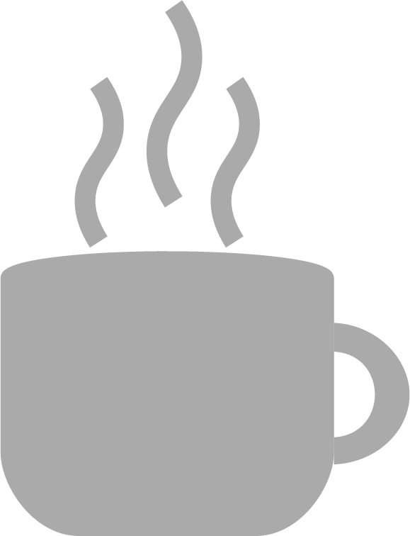
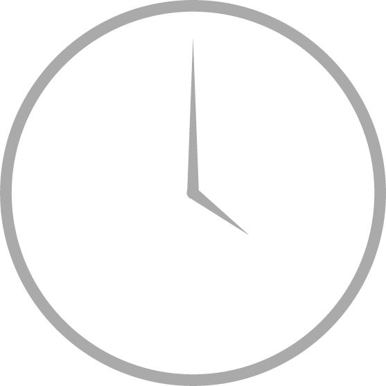
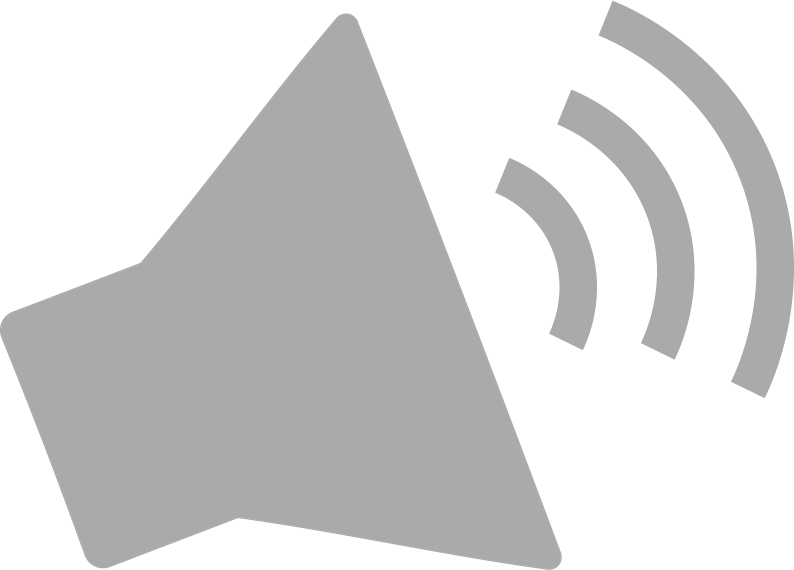

All of our events are free and open to all!
|  |
Social EventsThroughout the quarter, we will host a series of social gatherings including Happy Hours, Trivia Nights, Jeapordy, and a series of other fun events. To stay appraised of upcoming events, check out our calendar as well as our discord server. |
Town Hall MeetingsOnce a quarter, we will all gather to amplify perspectives and concerns among students in our community, and promote empatyh among our fellow PSTAT graduate students. |
|

|
Stuff you Missed in UndergradThis series of lectures, hosted weekly, is presented by graduate students and is designed to introduce (and possibly re-introduce) our fellow PSTAT graduate students to some concepts that will prove useful in our graduate careers. Topics will range from mathematics, to probability, to programming, and beyond. |
|  |
Graduate Student Office HoursThese weekly office hours are designed to be yet another way in which you can interact with your fellow PSTAT grad students. Feel free to stop by to get advice, unofficial course help, or to just chat! |
|  |
Faculty and Graduate Student SeminarsHosted by both members of the PSTAT department and graduate students from a variety of disciplines, this seminar series is designed to forge a stronger bond between students and faculty, as well as provide insight into the world of research in Statistics. |